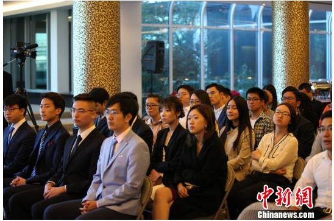

Today, I am so honored and lucky enough to go to the Freshman Meeting of Consulate General. This meeting includes more than 20 universities, over 100 students in each grade, such as Columbia University, New York University and so on.
I remember before going abroad, many people have told me that to see compatriots in foreign countries is just like to see relatives, of course, I also have the same feeling. But the more feeling is a shame, like senior Wang said this morning before leaving, the people walking in the streets of New York are briliant, including scavengers, they all have their own proficiency in a particular line. Today, when I see so many excellent classmates, I feel I have to learn a lot. I still have a long way to go.
At the meeting, the speech of Ambassador Zhang Qiyue and Consul Zhang Yang were humorous and meaningful, and they were really experienced people. The infectious expressions of emotion from the inside to the outside attracted me deeply.
But in fact, if you ask the students what is the most impressed thing, I guess the answer must be Chinese food! Like ambassador Zhang Qiyue said :"This is the best Chinese food you have ever had in New York." Yes! A taste of home, especially the sweet and sour spareribs. WOW! My roommate told me they were almost tears. I thought then, if I could make such a dish, I would go to start up a restaurant. Ha.
At last, I had a lucky opportunity to take a photo with Ambassador Zhang Qiyue, maybe it is my biggest honor over these years, Ambassador Zhang Qiyue is very kind, always smile, like the news said, she represents the most beautiful Chinese women, it is without any exaggeration.
Well, anyway, I do not want to waste too much time on the lyric, I used to be a romantic experiencer, however later I found that too many romantic feelings are not suitable for work, especially not suit to my age, and it also wastes a lot of time. Finally, it is my first time on the news, very embarrassed, haha.
Finally, thanks senior Wang Ziyu and Yun to give me the opportunity to participate in such wonderful activity, thank you so much.
Li Yulin
2017.9 NY
今天，我很荣幸而幸运地参加了中国驻纽约总领馆17年新生见面会，到会的有纽约州附近20多所高校，100多位各年级留学生，像哥伦比亚大学，我在的纽约大学等等。
记得出国前，很多人都跟我说，在国外见到同胞就跟见到亲人一样，当然我也有一种很亲切的感觉。然而更多的是一种自愧不如，就像今早临行前王学长说的那样，在纽约街上走着的人都是人精，包括拾荒者，他们都有自己的一技之长。而今天见到这么多优秀的同学，我深深觉得自己要学习的还有很多，需要走的路还很远。
见面会上，章启月大使和张扬领事的演讲幽默而有意义，果然是有阅历的人，言语中一种由内而外的感染力深深吸引着我。
但其实你要问在场的同学们印象最深的是什么，我估计答案八成是中餐！就像章启月大使说的一样，这是我们在纽约吃过最好吃的中餐了，一种家的味道，特别是那道糖醋排骨，哇！小伙伴们吃的时候都快要热泪盈眶了。我当时就想，要是能做出这样的菜，我就去开餐馆了哈哈哈。
最后能有机会和章启月大使合影，真的是我这二十多年来的荣幸，章启月大使真的非常亲切和蔼，永远面带笑容，就像新闻上说的那样，最美的中国女性代表，毫不夸张。
好了，话说回来，不想浪费太多时间在抒情上，我以前是个浪漫主义者，后来经历多了发现浪漫情怀并不适用于工作，也不适用于我现在这个年龄，反而浪费时间，就这样吧。最后还上了个新闻，第一次上新闻非常不好意思哈哈。
最后感谢王子昱学长，阿允学姐给我机会参加这样美好的活动，谢谢你们。
小伙伴们加油！去努力创造属于我们的一切！
霖小可
2017.9 于纽约

(That's all)